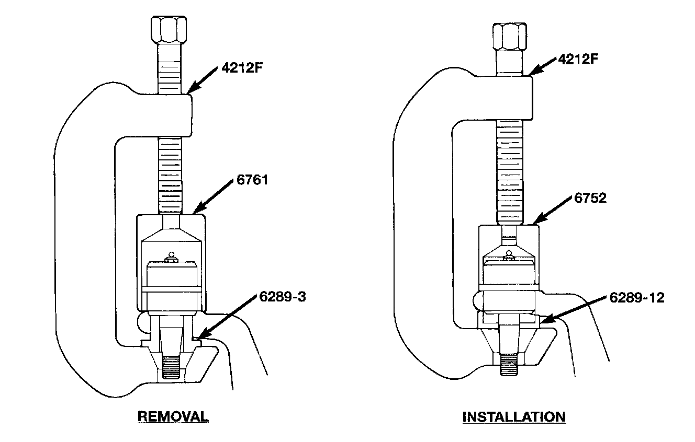
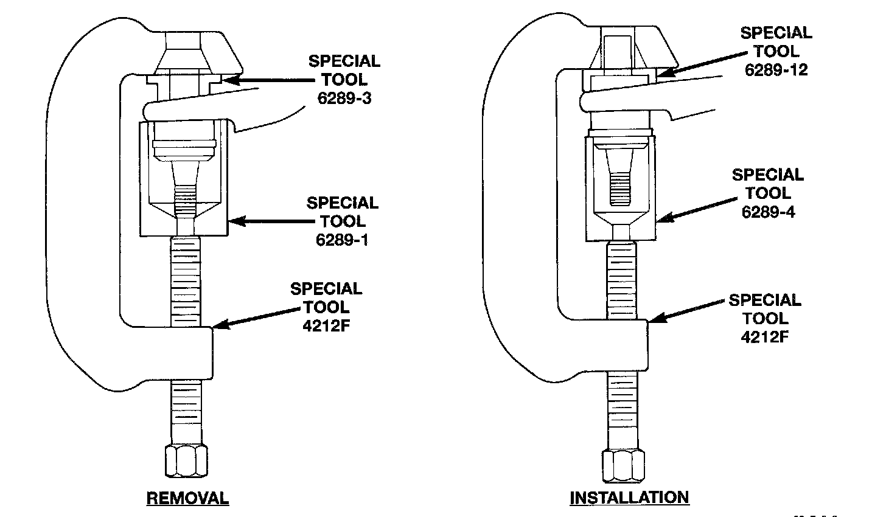

Lower Ball Joint Replacement
KNUCKLE REMOVAL
1. Raise and support the vehicle.
2. Remove wheel and tire assembly.
3. Remove hub bearing.
4. Remove the axle shaft.
5. Remove the tie rod on left steering knuckle. Remove the tie rod and drag link on right steering knuckle.
6. Remove the cotter pins from the upper and lower ball studs.
7. Remove the upper and lower ball stud nuts.
8. Strike the steering knuckle with a brass hammer to loosen knuckle from the ball studs. Remove knuckle from ball studs.
UPPER BALL JOINT REPLACEMENT
Upper Ball Joint Remove/Install:

1. Position tools as shown to remove and install ball joint.
LOWER BALL JOINT REPLACEMENT
Lower Ball Joint Remove/Install:

1. Position tools as shown to remove and install ball joint.
KNUCKLE INSTALLATION
1. Position the steering knuckle on the ball joints.
2. Install and tighten the bottom retaining nut to 109 Nm (80 ft. lbs.) torque. Install new cotter pin.
3. Install and tighten the top retaining nut to 101 Nm (75 ft. lbs.) torque. Install new cotter pin.
4. Install the axle shaft.
5. Install the hub bearing.
6. Install the tie rod on the left steering knuckle. Install the tie rod and drag link end on the right steering knuckle.
7. Install wheel and tire assembly.
8. Remove support and lower vehicle.